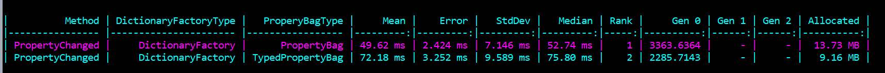

A property bag is a class that can hold multiple (dynamically registered) values. It can be compared to a dictionary, but does somewhat more since it will also do integrity checks and change notifications.
Catel ships with multiple property bag implementations out of the box and uses a shared interface IPropertyBag to make it easy to switch between multiple implementations.
var propertyBag = new PropertyBag();
propertyBag.SetValue("MyBoolValue", true);
propertyBag.SetValue("MyIntValue", 42);
propertyBag.SetValue("MyStringValue", "my string");
PropertyBag
The PropertyBag class has been in Catel for a long time and uses a single Dictionary<string, object> as backing storage.
The upside of using a single dictionary as backing store is that there is no need for multiple allocations of each backing type dictionary. The downside is that any value type stored in the PropertyBag must be boxed to an object.
Since Catel 5.12, the PropertyBag uses the BoxingCache to try and re-use existing boxed values to try and minimize the memory pressure while boxing.
The best use case for the PropertyBag is reference objects.
TypedPropertyBag
The TypedPropertyBag uses separate dictionaries for each value type. To prevent excessive memory by default, each value type dictionary will only be instantiated when actually used for the first time.
The advantage of storing values inside typed dictionaries is that it removes the requirement for boxing, therefore resulting in improved memory usage as shown below in the benchmarks comparing the different implementations:

The downside of the TypedPropertyBag is that it is slightly slower than the PropertyBag.
The TypedPropertyBag will start showing (memory usage) benefits over the PropertyBag implementation when multiple value types are being stored in the property bag.